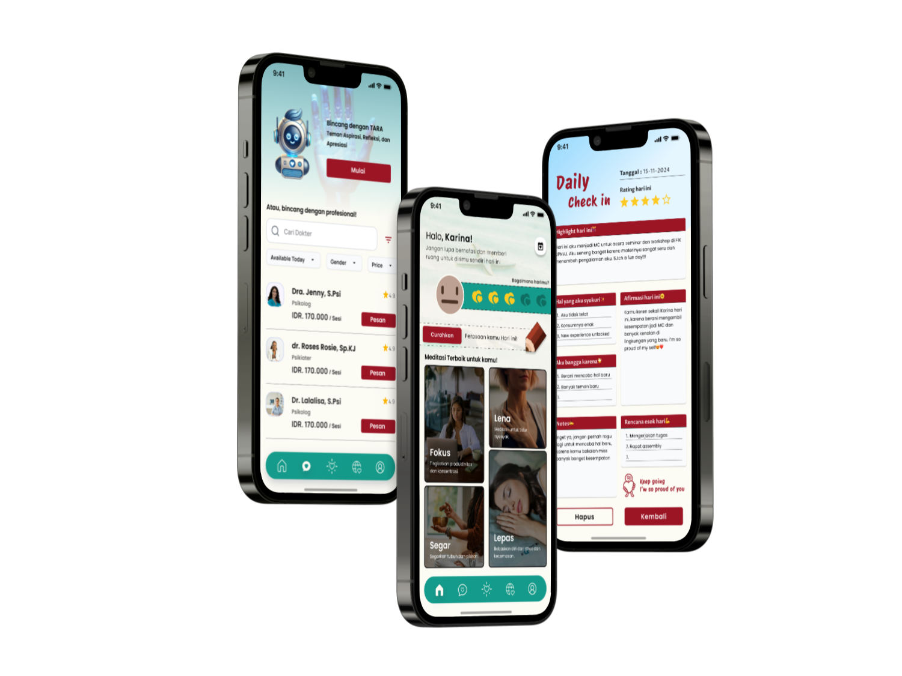
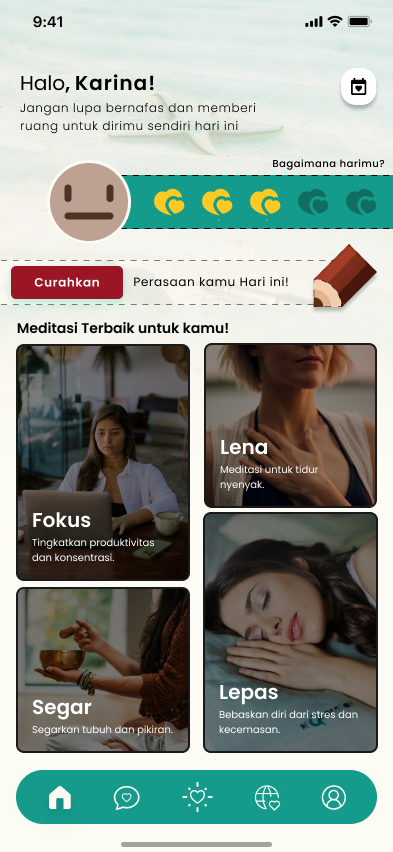
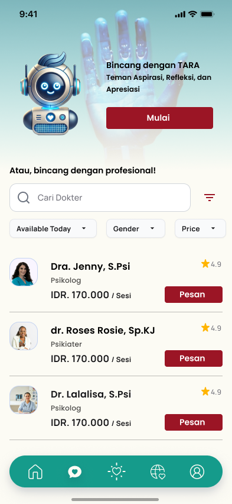
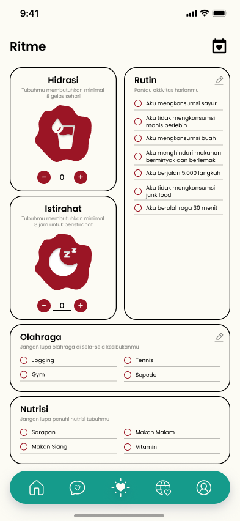
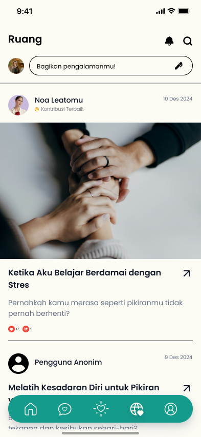
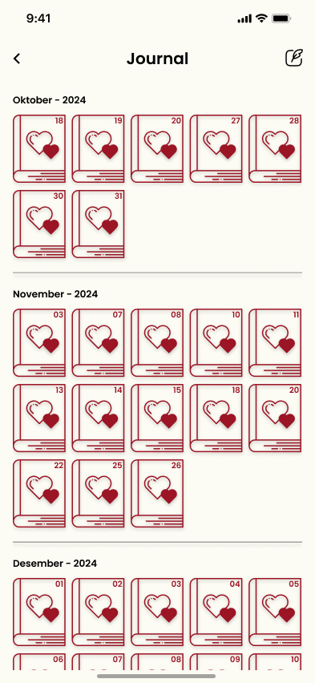
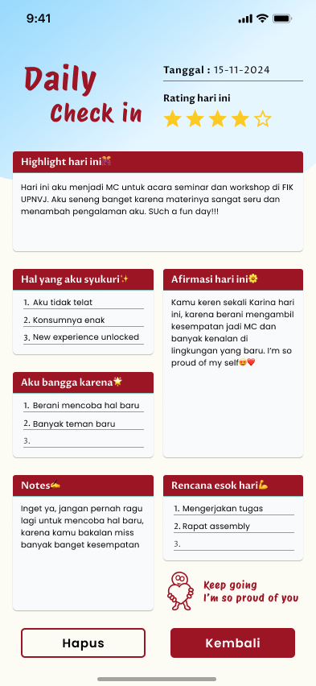
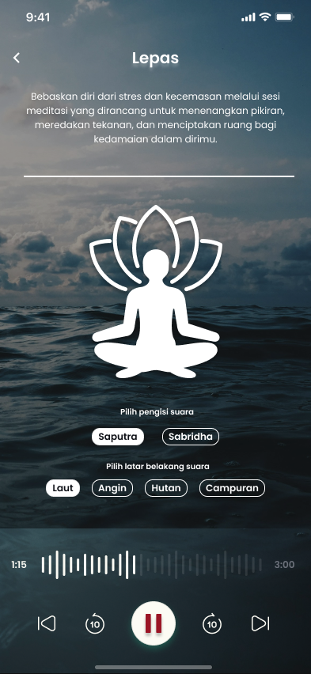
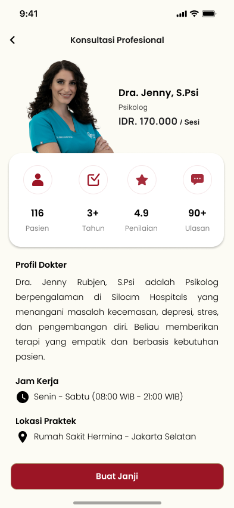

Selaras
Mental health app that provides a safe space for you to feel and heal.
- Role
- UI/UX Designer
- Timeline
- January 2025
- Stack
- Figma · Canva · Maze
- Outcome
- Top 16, Techcomfest 2025

About the project
Selaras helps people look after their mental health in a way that feels safe and simple. Many people feel unsafe sharing what they feel, or find professional help too hard to schedule. Selaras puts several tools in one place: mood tracking, self-journaling, guided meditation, a chat with an AI that only listens and encourages (it does not diagnose), book consultation online with professionals, and a tracker for daily habits like water, sleep, and exercise. The app is built around one idea: Listen, Understand, Heal.
The challenge
The hardest part was designing for such a sensitive topic. The app needed to feel calm, friendly, and welcoming rather than clinical, while still offering many features in one place. We also had to keep the navigation simple and consider privacy carefully, such as allowing people to like community posts without commenting on them.
How we worked
We used the Design Thinking approach to guide the design process, starting with understanding people's needs and challenges, then exploring ideas and testing solutions.
- Empathize. We interviewed people aged 18-35 who are active online, live in urban areas, and care about mental health. We explored their needs, concerns, and habits, then summarized our findings in an empathy map.
- Define. We created a user persona that helped us identify three key needs: a safe space to express feelings, easy access to professional support or AI assistance, and tools to build a healthy routine.
- Ideate. We developed the user flows and information architecture, organizing the app into four main sections: "Ruang", "Bincang", "Ritme", and "Profile".
- Prototype. We started with low-fidelity wireframes for each section, then developed a style guide covering the color palette, typography, interactive elements, navigation bar, and logo. We used these elements to create the high-fidelity mockups.
- Test. We conducted usability testing in Maze with 10 participants across 7 scenarios. All participants successfully completed the assigned tasks, and we documented the results to evaluate the overall experience.
What we designed
- Homepage: The main page of the app. Users can record their mood for the day, see meditation recommendations, and open a calendar to review their daily emotions and habits.
- Bincang: A space to talk. Users can chat with TARA, an AI companion that listens and encourages without diagnosing, or find and book a professional.
- Ritme: A daily habit tracker for water intake, sleep, exercise, and nutrition, plus a checklist for daily routines.
- Ruang: A community space where users can read and share experiences about mental and physical health. Posts can be liked but not commented on, to protect privacy and comfort.
- Journal: A collection of all journal entries, organized by month, so users can look back at their past days.
- Daily check-in: A guided journaling form with prompts for the day’s highlight, things the user is grateful for, things they are proud of, a daily affirmation, and a plan for tomorrow, plus a rating for the day.
- Meditation: Guided meditation sessions grouped by need, with an audio player and a choice of background sounds.
- Consultation: Users can browse professionals, view their profile, experience, consultation fee, and book a session with them.








Outcome
Selaras placed in the top 16 at the Techcomfest UI/UX Design Competition 2025, a national competition held by Politeknik Negeri Semarang.
Check out the prototype ↗ and the proposal ↗.
What's next
Let’s work together.
I’m open to UI/UX design roles and collaborations. Let’s talk about how I can contribute.